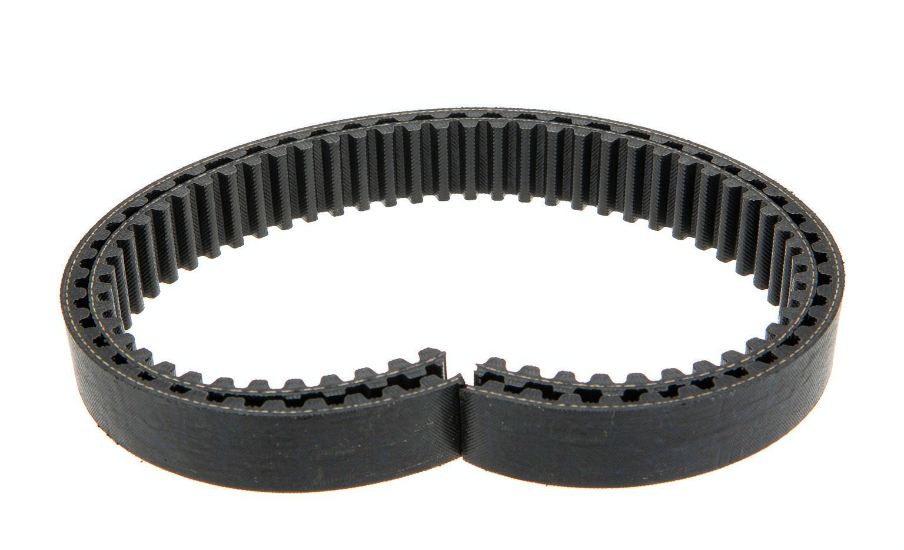

Buyers searching 0099971792 typically need three things fast: correct application data, a stable factory source and clear MOQ terms. This page covers all three for the v-ribbed belt used on Mercedes-Benz vehicles.
OE 0099971792 is a V-Ribbed Belt reference. In the Hyundai-Kia numbering system the prefix 00999 denotes the V-Ribbed Belt family, which holds 4 references in KingMay's Guangzhou catalog. Wholesale MOQ is 10 pieces; quotes are issued within one business day.
How 0099971792 decodes in the Hyundai-Kia catalog system. The prefix identifies the component family; the suffix carries model and variant information.
| Field | Value |
|---|---|
| Full reference | 0099971792 |
| Normalized (no hyphen) | 0099971792 |
| Prefix (family code) | 00999 |
| Prefix maps to | V-Ribbed Belt |
| References sharing prefix 00999 | 4 in KingMay catalog |
| Numbering family | Hyundai-Kia 5+5 format |

Other part numbers frequently ordered together with 0099971792 by wholesale clients.
| OE Number | Component |
|---|---|
| 0029934896 | V-Ribbed Belt for MERCEDES-BENZ GLA-CLASS, KIA CERATO I Hatc |
| 0029936796 | V-Ribbed Belt for MERCEDES-BENZ S-CLASS Coupe (C216), CLS (C |
| 0079978092 | V-Ribbed Belt for MERCEDES-BENZ 124, FORD FOCUS I Clipper (D |
| 0089974492 | V-Ribbed Belt for AUDI A6, VW AMAROK, MAN LION´S REGIO, NEOP |
| 0099971892 | V-Ribbed Belt for AUDI A5, MERCEDES-BENZ G-CLASS, JEEP CHERO |
| 0099978592 | V-Ribbed Belt for MERCEDES-BENZ E-CLASS, DAF F 3600 |
| 0109970692 | V-Ribbed Belt for MERCEDES-BENZ CLS, HYUNDAI ACCENT i25 IV S |
| 0109977092 | V-Ribbed Belt for MERCEDES-BENZ CLK, OPEL FRONTERA A (U92), |
References that share the 00999 family prefix with 0099971792. In the Hyundai-Kia numbering system the leading five digits identify the component family, so these numbers usually belong to the same assembly group and are ordered together by distributors building a consolidated shipment. Always confirm the variant suffix, connector layout and dimensions before substituting one reference for another.
Other part numbers in the transmission & drivetrain group that wholesale clients order alongside OE 0099971792. Grouping mixed references into one shipment is how most importers reach full-container freight thresholds.
Browse all 615 Transmission & Drivetrain OE references → · ← Previous in Transmission & Drivetrain · Next in Transmission & Drivetrain →
| Item | Detail |
|---|---|
| Export packing | Neutral carton, inner foam protection; custom labels on request |
| Lead time | 7 working days (stock) · 25-35 days (production run) |
| Shipping terms | FOB Guangzhou / Shenzhen; CIF & DDP negotiable |
| Payment | T/T, LC at sight for contracts; sample orders by T/T |
| QC documentation | Packing list + photo report + dimension check per shipment |
The questions below are the ones buyers raise most often about OE 0099971792 — fitment, fault symptoms, cross-references, pricing and export terms. Each answer is written to be quotable on its own.
Every shipment of 0099971792 leaves with a packing list, photo documentation and a QC report. Warranty terms are agreed per contract and reference that inspection record; claims are settled in writing against the documentation.
Aftermarket v-ribbed belt comes from tooling houses that hold the original drawings or licensed equivalents. KingMay sources from vetted factories and inspects each batch; the manufacturer name is available on request where your market requires origin documentation.
Four variables explain most of the spread: material grade, whether the goods are new production or clearance stock, packing format, and whether the quote is ex-works or landed. Ask for the material certificate alongside the price — that is what makes a comparison like-for-like.
The Related OE References table above lists the alternates we see most often in trade inquiries. Cross-references work because the engineering envelope is shared across the transmission & drivetrain family — always confirm dimensions and connector layout before you swap.
Treat it as a wear item: inspect every 20,000-30,000 km and replace at the first sign of leakage, noise or performance loss. Real service life swings widely with climate, road surface and duty cycle, so mileage on its own is a weak indicator.
OEM means the part was produced for the vehicle maker's assembly line; aftermarket means it is made independently to the same engineering drawing. For a v-ribbed belt the practical gap is usually tooling age and packaging rather than fit, provided the tolerance class matches.
Buyers searching for OE 0099971792 most often land on these pages next.
Send your 0099971792 requirement and destination port to our export desk for a landed-cost estimate. All 0099971792 shipments leave with a packing list, photo documentation and QC report. Combined orders with other Hyundai-Kia references can share one container to cut landed cost. Payment terms are negotiable for established distributors; first-time buyers are welcome to start with a sample lot.
Send quantity + destination port. Quotations typically return within one business day.